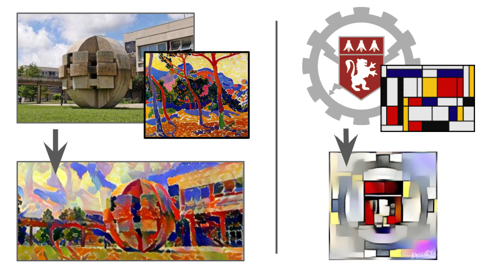

Quelques applications
Historiquement les GANs ont été utilisés pour générer des photos réalistes, un exemple marquant est celui de figures humaines :
Cette personne n'existe pas vraiment, elle a été générées par le site thispersondoesnotexist.com qui repose sur l'algorithme : StyleGAN2 (Dec 2019) - Karras et al. and Nvidia
source : thispersondoesnotexist.com
Un autre exemple historique est celui d'application de styles à des images. Ici différents styles ont été appliqués en utilisant le site deepart.io.

Des algorithmes plus récents ont permis l'application de mêmes techniques pour la générations d'objets 3D :

Plus d'exemples sont disponible sur ma page Wakelet